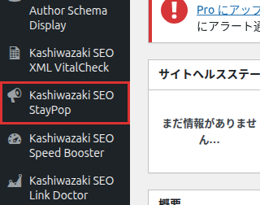
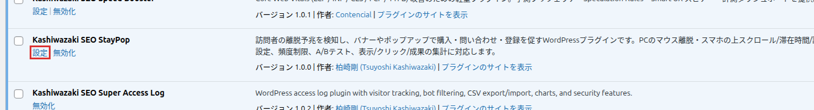
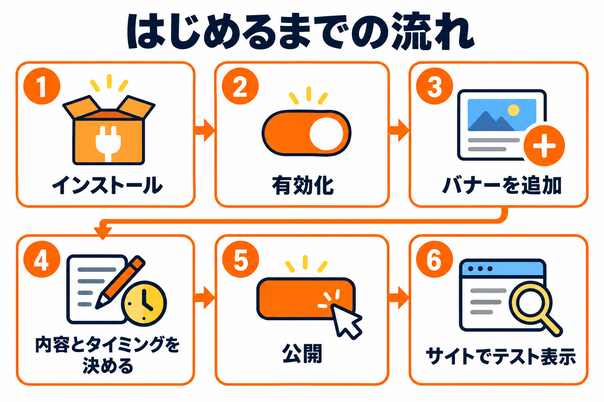
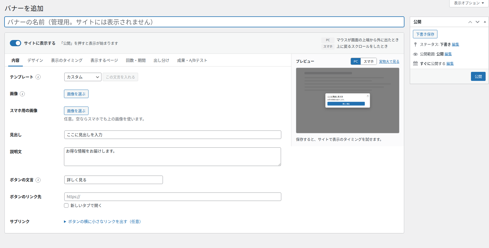

インストール・初期設定
プラグインのインストールから、最初のバナーを作って公開し、サイトで試すまでを順に説明します。
インストール手順
管理画面の左メニューから「プラグイン」→「プラグインを追加」を開きます。
右上の「プラグインのアップロード」をクリックし、プラグインの ZIP ファイルを選んで「今すぐインストール」をクリックします。
インストールが終わったら「プラグインを有効化」をクリックします。管理画面の左メニューに「Kashiwazaki SEO StayPop」が追加されます。

プラグイン一覧の「Kashiwazaki SEO StayPop」の行にある「設定」リンクからも開けます。こちらは「設定」タブが開きます。

有効化したときに用意されるもの
| 項目 | 有効化直後の状態 |
|---|---|
| バナー | まだありません。自分で作ります。 |
| 計測 | オン（表示・クリック・閉じた・成果の回数を記録します） |
| 訪問者の同意 | 同意を確認せずに記録する |
| トラッキング拒否 | ブラウザで「トラッキング拒否」にしている人は記録しない |
| ログを残す期間 | 180 日（過ぎたログは毎日自動で削除します） |
有効化しただけでは、サイトには何も表示されません。バナーを作って公開したときに、はじめて表示が始まります。
最初のバナーを公開するまで

左メニューの「Kashiwazaki SEO StayPop」を開き、見出しの横の「バナーを追加」をクリックします。
いちばん上の欄に、管理用のバナーの名前を入れます（サイトには表示されません）。
「内容」タブで、見出し・説明文・ボタンの文言・ボタンのリンク先を入れます。テンプレートを選んで「この文言を入れる」を押すと、よくある文言が入ります。
「デザイン」タブで表示形式を選びます。右のプレビューで見た目を確かめます。
「表示のタイミング」タブで、表示のきっかけを確かめます。最初から「マウスが画面の上端から外に出たとき（PC）」と「上に戻るスクロールをしたとき（スマホ）」がオンです。
右の「公開」ボタンを押します。上部の「サイトに表示する」がオンなら、この時点で表示が始まります。
プレビューの下の「サイトでテスト表示」を押し、サイトで実際に表示されることを確かめます（詳しくはこちら）。

おすすめの始め方: まずは表示形式を「下部バナー」か「隅からのスライド表示」にし、表示する回数を「1回の訪問につき1回まで」、閉じたあとは「7日は表示しない」（いずれも初期値）のまま公開すると、訪問者のじゃまになりにくいです。
使える人（権限）
| 画面・操作 | 使える人 |
|---|---|
| 左メニュー・バナー一覧・編集画面 | 投稿を書ける権限のある人（寄稿者・投稿者・編集者・管理者）。一覧には、自分が編集できるバナーだけが表示されます。 |
| バナーの公開 | WordPress の投稿と同じく、公開できる権限のある人（投稿者以上）。寄稿者は下書きの保存までです。 |
| 集計タブ・設定タブ・一覧の「直近30日」の列 | 管理者だけ |